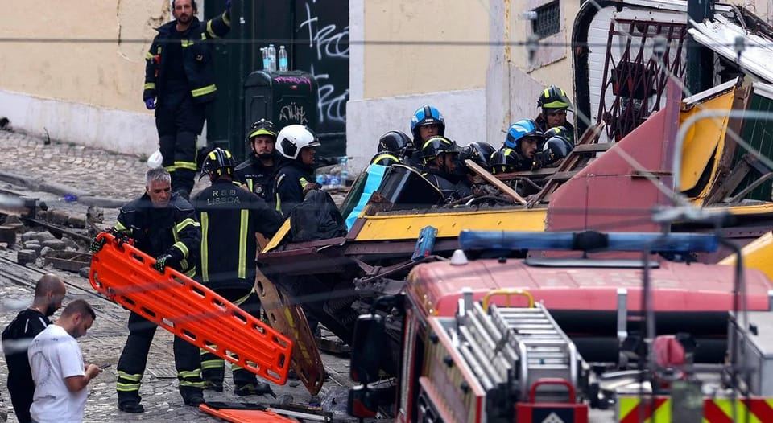

世界苦茶09月04日新闻 | 41条 | 中朝俄元首討論器官移植視頻走紅全球

中朝俄元首討論器官移植視頻走紅全球 | 泰國將進行政府改選 | 中國閱兵激發世界反彈 | 德國選項黨候選人突然相繼去世
苦茶数据
美元兑人民币：7.14（昨日7.14，前日7.14）
美元兑日元：148.19（昨日148.49，前日147.66）
上证指数：3745（昨日3813，前日3853）
标普500指数：6448（昨日6415，前日6460）
比特币：110645（昨日111277，前日109586）
布伦特原油：67.13（昨日68.06，前日68.44）
中国新闻
• 中国大阅兵与中俄朝同框 ：中国星期三在历来最大规模阅兵式上秀出大量尖端武器，同时形成中俄朝三国领导人天安门看阅兵的历史性同框画面，对美国及西方国家阵营发出强大震慑。中国国家主席习近平讲话时警告，人类今天又面临和平还是战争，共赢还是零和的抉择，强调中国“坚定站在历史正确一边”“人类文明进步一边”。欧盟外交高层则批评，一个反西方的“新国际秩序正在形成中”，中俄朝以及伊朗领导人齐聚北京，是对以规则为基础的国际体系的“直接挑战”。在北京举行九三阅兵的这天，美国总统特朗普接受媒体采访时称，不担心中俄形成反美轴心，又强调美国拥有全球最强军队。但特朗普也在社媒上指责中朝俄“密谋对抗”美国。
• 中国观测史最热夏季 ：中国2025年夏季全国平均气温创历史新高，成为观测史上最热夏季。据中国天气网报道，今年6至8月，中国大部分地区热力十足，全国平均气温达22.31摄氏度，为有观测记录以来最热夏季。在刚刚过去的8月，南方的高温天气更是“耐力十足”，上海徐家汇打破观测史最长连续高温纪录，杭州打破8月连续高温纪录。进入9月，南方的高温天气尚未消退，四川盆地到江南大部的高温天气星期三又将陆续重新上线。到5日，四川盆地到江南大部都将出现高温天气，例如上海、杭州、合肥、武汉、南昌等地，5日前后最高气温都将再度冲上35摄氏度高温线。
• 学者析阅兵反介入体系 ：台湾军事学者、中华战略前瞻协会研究员揭仲说，中国大陆星期三举行阅兵展出的装备中，刻意凸显“反介入作战”、“防空/反弹道导弹”、“反无人机”等战力在体系上的完整性，其中YJ-20反舰弹道导弹与YJ-21空射反舰弹道导弹等，对美军在西太平洋与南中国海的舰队，势必会造成不小威胁。揭仲说，此次阅兵虽名为“中国人民抗日战争暨世界反法西斯战争胜利80周年”，但整个过程与抗战胜利的连结很有限，更像是中国国家主席习近平推动军队改革10周年的成果展。揭仲分析，或许是这个“言外之意”，使得在徒步方队的构成上，军改后新成立的“军事航天部队”、“网络空间部队”、“信息支援部队”与“联勤保障部队”四个兵种方队，在人数与规模上与军改前即存在的陆军、海军、空军与火箭军的四个军种方队几乎一样，不仅凸显这四个军改后成立兵种的重要性与四军种无分轩轾，也更受瞩目。
• 习近平嘉奖阅兵全体 ：中央军委主席习近平星期三签署通令，嘉奖参加纪念中国人民抗日战争暨世界反法西斯战争胜利80周年阅兵全体人员。据新华社报道，嘉奖令指出，受阅部队作为中国武装力量的代表，奉献了一场弘扬抗战精神、体现时代特色、具有大国气派、展示强军风采的阅兵盛典，集中体现了人民军队坚决捍卫国家主权、安全、发展利益，坚定不移维护世界和平的决心意志和硬核实力。受阅部队精彩出色的表现，充分彰显了全军官兵坚定维护核心、坚决听党指挥的政治本色和血脉传承，全面展示了新时代人民军队政治建军新风貌、力量结构新布局、现代化建设新进展、备战打仗新成效，集中体现了人民军队坚决捍卫国家主权、安全、发展利益，坚定不移维护世界和平的决心意志和硬核实力，极大振奋了民族精神、激发了爱国热情、凝聚了奋斗力量，更加坚定了全党全军全国各族人民以中国式现代化全面推进强国建设、民族复兴伟业的信心决心。
• 外宾天安门看阅兵座次引议 ：许多外国领导人星期三登上北京天安门城楼，观看中国纪念抗日战争胜利80周年大阅兵。港媒报道，此次外国领导人和中国领导人的座次是穿插安排的，并称中国方面这样安排，有招待客人的意味。九三阅兵星期三上午9时开始，中国国家主席习近平与20多位国家元首和政府首脑一起登上北京天安门城楼，俄罗斯总统普京和朝鲜最高领导人金正恩分别站在习近平的右侧与左侧。网媒“香港01”报道称，普京和金正恩成为此次阅兵最受重视的外宾。报道提到，北京在2015年举行大阅兵时，韩国时任总统朴槿惠虽然被安排在习近平右侧第二个位置，紧挨着普京，但和此次金正恩能近距离站在习近平旁边有着根本的不同。
• 习会普拉博沃谈双边 ：中国国家主席习近平星期三下午与印度尼西亚总统普拉博沃会面时说，总统先生克服困难赴华出席纪念活动，体现了对中印尼关系的重视和印尼人民对中国人民的真挚友好情谊。据央视新闻客户端报道，习近平星期三下午在北京人民大会堂与专程赴华出席抗日战争胜利80周年阅兵式的普拉博沃会面。习近平说，中方支持总统先生施政，支持印尼尽快恢复秩序和稳定，支持印尼发展壮大。今年是中印尼建交75周年，也是印尼独立80周年和万隆会议召开70周年。无论国际形势如何变化，中印尼始终传承独立自主的民族精神，坚持合作共赢的相处之道，展现和平发展的大国担当。中方愿同印尼秉持建交初心，弘扬和平共处五项原则和万隆精神，高水平推进中印尼命运共同体建设，为人类进步事业作出应有贡献。
• 日本称关注中方阅兵动向 ：中国星期三在北京举行纪念抗日战争胜利阅兵，日本内阁秘书长林芳正对此回应说，“关注相关动向”，但不便评论中方的意图。根据共同社报道，林芳正当天在记者会上就中国举行阅兵作出上述回答。他说，日本战后一贯走和平国家道路，已多次向中国表达这一立场。他并强调，日中两国已确认全面推进扩大共同利益的“战略互惠关系”和努力构建建设性、稳定的双边关系这一大方向。
• 赖清德称，不拿枪纪念和平 ：中国大陆星期三举行抗战胜利80周年阅兵，台湾总统赖清德说，台湾人民热爱和平，不拿枪杆子纪念和平。若当初受侵略的国家，无视人类文明的进程、走向法西斯老路，只会让世界感到惋惜、遗憾。赖清德星期三在九三军人节当天主持秋祭忠烈殉职典礼，随后在个人脸书发文说，台湾人民热爱和平，台湾不拿枪杆子纪念和平，要坚守对自由民主的信念，更相信手中的装备，“是用来保家卫国，不是用来侵略扩张”。赖清德说，今年是第二次世界大战终战80周年，80年前的昨日，“我国陆军上将徐永昌和其他的八个同盟国，一起签署文件、迎来终战，共同见证‘团结必胜、侵略必败’的血泪教训”。很欣慰的是，当初的轴心国，都成为了民主国家，不仅保障自由民主、奉行市场经济、更在乎人权与法治，实现了繁荣与和平，广受世界各国敬重。
• 宋楚瑜吁大陆承诺不动武 ：中国大陆九三阅兵，台湾亲民党主席宋楚瑜说，大陆应表态不会用武力解决两岸问题。据台湾《上报》报道，宋楚瑜星期三上午赴中正纪念堂，向蒋介石和先烈致敬。宋楚瑜说，中国大陆今天展示军力，并非炫耀武力，而是要让全世界了解，中华民族绝对有自卫能力。
• 特朗普指责中朝俄密谋反美 ：在俄罗斯总统普京和朝鲜领导人金正恩到北京，与中国国家主席习近平一起出席中国纪念抗日战争胜利80周年阅兵式之际，美国总统特朗普说，他对普京“非常失望”，他说不担忧俄中关系，却指责中朝俄领导人密谋对抗美国。路透社报道，特朗普星期二接受《斯科特·詹宁斯电台节目》访问时说，美国政府正在计划采取一些行动，以减少俄罗斯在乌克兰战争中造成的死亡人数。特朗普说：“我对普京总统非常失望，我们将采取一些行动来帮助乌克兰人民活下去。”
• 多公司放假看阅兵观影 ：中国多家公司宣布星期三停止工作，准许员工带薪休假观看九三阅兵，其中一些公司还统一组织9月18日观看抗日电影《731》，有的公司在阅兵当天准备了烤全羊等佳肴。综合红星新闻和极目新闻星期二报道，辽宁鞍山紫玉激光科技有限公司负责人受访时说，此次九三阅兵意义重大，公司部分产品涉及军用领域，特意安排员工放假半天观看阅兵，希望借此增强大家的使命感和责任感，让大家意识到自身工作的重要价值。总部位于湖南省浏阳市的金磨坊食品股份有限公司工作人员受访时说，公司内部会一起组织观看纪念大会，此前一直有这个传统。
• 洪秀柱出席阅兵引争议 ：台湾在野的国民党前主席洪秀柱出席中国大陆九三阅兵，被批唱和大陆史观。国民党立委谢龙介说，不需要在台湾内部找敌人，并称对九三阅兵，更应知己知彼。综合《联合报》、TVBS新闻网等报道，大陆星期三在北京举行九三阅兵，洪秀柱因出席活动被民进党立委批评，指她为大陆背书、唱和大陆史观。对此，谢龙介受访时说，不需要在台湾内部找敌人，面对大陆阅兵，更应该知己知彼。谢龙介进一步说，大陆拥有什么武器，现在进步到什么程度，台湾要如何配置采购量能等，这么庞大的一笔钱，台湾要怎么分配，要怎么使用，要采取什么样的武器发展，才能够因应两岸这么紧张的状态。
• 特朗普称中国不构成威胁 ：美国总统特朗普说，中国不会对美国构成军事威胁，并否认了北京举行的大规模阅兵令美国担忧的说法。据彭博社报道，当被问及九三阅兵是否对美国实力构成挑战时，特朗普回答说：“不，我完全不这么认为。”特朗普在九三阅兵开始前几个小时，在白宫椭圆形办公室向记者说：“正如你们所知，我和习近平主席关系很好……但中国对我们的需要远胜于我们对他们的需要。”
• 金正恩随行少见军方高层 ：朝鲜领导人金正恩出席中国人民抗日战争暨世界反法西斯战争胜利80周年纪念活动，随行人员中似无军方高层人士，引起关注。韩联社报道，从金正恩一行人乘专列抵达北京火车站相关视频和图片来看，随行人员包括劳动党中央委员会书记赵甬元、金德训和外长崔善姬，但不见国防部、人民军高层人士身影。考虑到阅兵基本上属于军事活动，朝鲜无军方高层参加活动实属罕见。有观点认为，这是因为多名朝军领导干部因涉及研发核武和弹道导弹，被列入联合国安理会对朝制裁名单，被禁止出境。与俄罗斯不同，中方一贯坚持遵守国际规则的立场，可能对受制裁朝方人士入境持消极态度。
• 广州车祸致六人受伤 ：中国广州市星期二发生严重交通事故，导致六人受伤。网传视频显示，肇事车辆冲上行人路，现场有小孩倒下不醒人事。综合南方探针、新快报等中国媒体报道，广州市公安局交管支队星期二晚发布警情通报，称广州市海珠区新南路庄头公园北门在当晚8时25分发生一起交通事故，致六人受伤。警情通报称，民警立即到场处置，将肇事司机40岁的叶姓男子当场控制，协助将伤者送医救治。
• 三新兵种首次亮相天安门 ：中国军事航天部队方队、网络空间部队方队、信息支援部队方队三支兵种星期三首次在天安门广场亮相。据新华社快讯，星期三上午举行的中国纪念抗战胜利80周年阅兵式上，军事航天部队方队、网络空间部队方队、信息支援部队方队，依次接受检阅。这是三支兵种首次亮相天安门广场。军事航天部队首次以战略兵种名义接受检阅。部队方队由军事航天部队牵头组建。中共中央军委调整军事航天部队领导管理关系一年多来，军事航天部队大力弘扬“两弹一星”精神、载人航天精神，聚力备战打仗，加快创新发展，提高安全进出和开放利用太空能力、增强太空危机管控和综合治理效能，为更好和平利用太空全面提升履行使命任务能力。
亚太印太新闻
• 泰在野党挺阿努廷组阁 ：泰国国会最大在野党人民党宣布支持泰自豪党组建新联合政府，意味着泰自豪党党魁阿努廷将成为新首相。执政的为泰党代首相蓬探随即寻求泰王解散国会以阻止阿努廷上台，但据称已遭王室驳回。人民党星期三召开记者会宣布，支持阿努廷出任首相及组建新联合政府。不过，人民党表明不加入新的联合政府，而是继续担任反对党，意味着泰自豪党若成功组阁，也会是少数派政府。
• 泰代首相寻解散国会 ：在泰国在野的国会最大党人民党星期三宣布支持泰自豪党党魁阿努廷成为下一任首相后，泰国代首相蓬探已着手解散国会，为提前举行大选铺平道路。彭博社报道，执政联盟的为泰党秘书长索拉翁告诉记者，蓬探已提交解散国会的御令草案，待泰王哇集拉隆功签署。法律规定泰国解散国会后，须在60天内举行全国大选。属为泰党的佩通坦上周被宪法法院裁定违反宪法规定的道德规范，立即解除首相职务，新首相必须获得下议院半数以上）支持方能当选。
• 中印尼商议800亿海堤 ：印度尼西亚总统普拉博沃与中国国家主席习近平在北京会晤，商讨了在爪哇岛修建800亿美元巨型海堤的计划。原本取消访华行程的普拉博沃星期二夜间启程前往北京，出席阅兵式，随后在北京与习近平会晤。路透社引述普拉博沃政府此前发布的消息说，这项旨在适应气候变化的海堤项目将耗时15至20年建成，总造价为800亿美元。印尼国务秘书普拉塞蒂在星期二晚间的新闻发布会上说，总统“密切关注印尼局势，并从各相关层面收到报告，获知印尼的公共生活已恢复正常。”
• 植田暗示符合条件将加息 ：日本首相石破茂会见了日本央行行长植田和男，并就经济和金融市场交换了意见，此前石破茂辞职压力加剧引发日元走低。植田和男星期三在首相官邸与石破茂会面后在东京对记者说：“与过去一样，我们就经济、物价和市场状况交换了总体意见。”在回答记者提问时，植田和男补充说，如果经济增长和物价出现符合央行展望的改善，日本央行将加息。会谈结束后，日元兑美元跌幅收窄，一度升至148.49，植田和男开始和记者对话前，汇率徘徊在148.90附近。
• 朱立伦称国民党领导抗战 ：国民党主席朱立伦说，抗日战争是由中华民国政府、中国国民党以及蒋介石所领导，“这是清楚无误的历史事实”。朱立伦星期三在脸书发文称，回顾国民党走过的130年历程，从革命创建民国、北伐统一、领导抗战，到保卫台湾、建设台湾、推动民主化，他深知国家安全与发展的基础，来自一代又一代将士前仆后继的牺牲与奉献，然而，当前台湾仍面临兵源不足、军购延宕、教育与训练等挑战。朱立伦说，国民党作为立法院最大党，将严格监督政府推动国防预算，确保军人待遇与福利落实到位，“永远做全体国军将士最坚强的后盾”。
• 美公务船被指穿越台海中线 ：台湾媒体报道，一艘美国公务船在九三阅兵举行当天，穿越台湾海峡中线。《自由时报》引述台湾安全通报网站消息报道，这艘不知名的美国政府公务船悄悄通过台湾海峡，而且这项消息没有获得中国大陆及台湾相关单位证实。公务船星期三上午7时已抵达澎湖七美的海峡中线附近海域。《自由时报》的报道称，上一次出现类似情况是在今年7月份，当时没有来自中国大陆或台湾关于该海峡过境的报告，也没有得到美国的进一步确认。
科技新闻
• 世气象组织通报，拉尼娜或回归 ：据世界气象组织发布的厄尔尼诺／拉尼娜现象最新通报，拉尼娜现象有可能从今年9月起回归并影响未来数月的全球天气和气候状况。不过，尽管拉尼娜现象有暂时降温影响，全球众多地区的气温仍可能高于平均水平。新华社引述气象组织星期二的介绍说，自2025年3月以来，中性条件持续。然而，拉尼娜现象有可能从9月开始并在未来数月浮现。9月至12月期间出现厄尔尼诺现象的可能性很小。尽管拉尼娜现象可能会在不少地方回归，但通报也指出，9月至11月，北半球众多地区和南半球很大一部分区域的气温预计将高于平均水平。
• 苹果拟加码美厂获关税豁免 ：苹果公司将在未来四年向美国制造业追加投资1000亿美元。该承诺帮助苹果获得了芯片关税的豁免。评论人士指出，这很大程度上化解了关税对苹果业务的威胁，但关税的真实代价或许仍将在本月转嫁到苹果消费者头上。下周，苹果将举办秋季新品发布会。有分析认为，苹果还有一种隐形涨价方式：取消较为低配的版本，可以迫使用户花更多钱购买更高存储容量的机型。
• 中国政府正利用私营部门推进军用AI发展： 在去年一月发表的一项研究中，上海交通大学的研究人员展示了如何利用AI在自动化的 “杀伤网” 中部署武器系统，这种 “杀伤网” 可在海战期间根据战场变化进行实时调整。六天后，中国军方宣布，该大学赢得了一份国防合同，将这一构想变为现实。该校还受命帮助军方利用分层AI模型跟踪快速移动的目标，快速生成水下无人机设计，并使无人机蜂群对无线电频率的变化更加敏感。根据乔治城大学研究人员周三公布的新数据，近年来，中国军方已突破一贯由国有国防承包商和与军方有关联的研究机构组成的网络，与数百家供应商合作，其中包括私企和非军事高校，以推动将AI融入其作战和武器系统。
财经新闻
• 特斯拉欧市销量普降 ：美国电动车公司特斯拉在欧洲几乎所有主要电动车市场的销售持续下滑，导致它在电动车需求强劲的国家失去大量市场份额。彭博社引述德国联邦机动车交通管理局星期三发布的数据说，特斯拉8月注册量下降39％，今年前八个月暴跌56％。这家由马斯克领导的电动车制造商在法国、比利时、丹麦和瑞典的8月销量也大幅下滑。挪威是例外，8月特斯拉注册量增长21％，今年以来增长26％。
• 携程居家办公试点细则 ：自9月1日起，携程所有产研员工在申请居家办公时，无需再经过直属领导审批，提交后即视为自动通过。此举旨在提升员工的工作与生活平衡，并进一步培养信任与自驱文化。此次政策变化是以产研团队为试点，之前的混合办公政策已经有70%的员工参与，公司希望通过简化流程，增加员工的灵活性和自主性。据了解，这项新政策的试点范围覆盖了国内所有已转正的技术(T 序列)及产品技术(PT序列)员工。调整后，员工的居家办公申请信息将以通知的形式同步给直属主管，但主管不再拥有审批权。
• 《财经》呼吁“科技牛”领航 ：中国《财经》杂志称，中国和美西方的科技竞争是一场国运之争，科技牛市需要更多的投资者为之努力、为之买单。《财经》杂志星期一发表评论文章，题为《以“科技牛”引领新周期》。文章称，近来中国股市出现史诗级上涨，达到十年高点。随着牛市迹象明显，人们又开始讨论这一轮牛市是快牛还是慢牛。人们一方面希望中国股市行稳致远，从这个意义上讲，希望这一轮牛市会是慢牛；另一方面，人们多少又希望牛市的步伐略微快一点，以吸引更多资金入市，对实体经济发挥更好的拉动作用。
• 物流业景气指数50.9% ：8月份中国物流业景气指数为50.9%，保持扩张态势。据《北京商报》报道，中国物流与采购联合会星期二发布上述数据。分项指数中，业务总量指数、新订单指数、库存周转次数指数、资金周转率指数、物流服务价格指数、固定资产投资完成额指数、从业人员指数和业务活动预期指数保持在50%以上扩张区间。
• 中国8月服务业PMI创高 ：受新订单加速增长影响，中国8月份服务业采购经理指数(PMI)升至53，高于7月的52.6，创下逾一年新高。标普全球星期三公布数据显示，中国8月服务业PMI创下去年5月以来的最快纪录，连续32个月保持在扩张区间，景气稳健扩张。服务业近期复苏的核心是新业务强劲增长。新订单增速连续第二个月加快。这在一定程度上得益于新出口业务的强劲增长，增速创下2月以来的最快纪录。
• 亚细安制造业PMI升至51 ：亚细安制造业产出加速扩张，增速创下过去14个月来的新高，带动整体制造业在8月份强劲增长。标普全球星期三发表的最新报告显示，8月份的亚细安制造业采购经理指数为51，高于7月份的50.1，是过去六个月来的最大增幅。采购经理指数若高于50的荣枯线，意味制造业处于扩张状态，50以下则显示制造业陷入萎缩。
• LG新能源与奔驰签署电池供应协议： 周三，韩国电池制造商LG新能源表示，公司近日与 梅赛德斯-奔驰 公司签署两项供应协议，总容量为 107吉瓦时。LG新能源分别与梅赛德斯-奔驰旗下子公司和集团股份公司签订合同。前者电池容量为75吉瓦时，合同履行地为美国，期限从2029年7月30日至2037年12月31日；后者电池容量为32吉瓦时，合同的履行地为欧洲，期限从2028年8月1日至2035年12月31日。
俄乌战争
• 金正恩称愿全力助俄罗斯 ：朝鲜领导人金正恩告诉俄罗斯总统普京，愿意“倾尽一切”帮助俄罗斯，而普京对朝鲜协助俄罗斯英勇对抗乌克兰表示感谢。路透社报道，金正恩和普京星期三都到北京出席中国纪念抗日战争胜利80周年阅兵式，两人当天也在北京举行了双边会谈。金正恩在会谈中告诉普京，自去年6月与俄罗斯签署伙伴关系条约以来，两国合作大幅加强。金正恩说，他愿意倾尽他一切所能来帮助俄罗斯。
国际新闻
• 特朗普称应提及美国贡献 ：美国总统特朗普说，中国为纪念二战结束而举行的“美丽仪式”本应凸显美国在击败日本过程中所扮演的角色。特朗普星期三在白宫椭圆形办公室告诉记者：“我认为那是一场美丽的仪式。我认为这非常令人印象深刻。”他跟着说：“我昨晚看了演讲。习近平主席是我的朋友，但我认为昨晚的演讲中应该提到美国，因为我们给了中国非常非常大的帮助。”
• 欧盟称专制联盟成形 ：欧盟最高外交官卡拉斯称，中国、俄罗斯和朝鲜领导人一起在北京纪念抗战胜利80周年的九三阅兵典礼上亮相，象征着一个“专制联盟”已形成，正在挑战以规则为基础的国际秩序，试图建立反西方的“新世界秩序”。欧盟外交与安全政策高级代表兼欧洲委员会副主席卡拉斯星期三在布鲁塞尔对记者说：“当西方领导人在为外交事务而会晤，一个专制联盟却在寻求快速形成一个新的世界秩序。”卡拉斯说：“看看今天习近平与俄罗斯、伊朗和朝鲜的领导人在北京站在一起，这不仅是反西方的姿态，这是对基于规则的国际体系的直接挑战。”
• 欧盟向阿富汗提供紧急援助 ：阿富汗东部地震造成1400多人死亡后，欧洲联盟宣布紧急援助100万欧元和130吨物资，帮助当地受灾民众渡过难关。据欧洲委员会星期二发布的公告，欧盟将向正在阿富汗救灾的人道合作伙伴提供100万欧元援助，从欧盟人道主义仓库调拨130吨救援物资，包括帐篷、应急住所、衣物、医疗物资、净水装备等。中国新闻社引述公告称，欧盟“人道主义空中走廊”将调派两架航班，向阿富汗运送救援物资。两架航班拟于本周晚些时候飞抵阿富汗首都喀布尔。
• 特朗普否认健康传闻 ：美国总统特朗普说，社交媒体上有关他健康状况不佳的报道是“假新闻”。综合路透社和法新社报道，特朗普星期二在白宫椭圆形办公室说，劳动节周末他忙于接受媒体采访，还去了弗吉尼亚高尔夫俱乐部。每年9月的第一个星期一是美国的劳动节。上周，特朗普连续几天没有安排任何公开活动或举行新闻发布会，这对非常喜欢出镜的特朗普来说极不寻常，引发了特朗普出现严重健康问题的猜测。
• 里斯本缆车脱轨致重灾 ：葡萄牙首都里斯本一辆有轨旅游缆车9月3日下午发生脱轨事故，造成至少15人死亡、18人受伤，其中5人伤势严重。事故原因正在调查。当局怀疑刹车失灵，线缆松脱导致缆车脱轨后与建筑物相撞。
• 六名德国极右翼德国选择党候选人在选举前数日相继去世： 本月，在德国州级地方选举前两周内，德国极右翼德国选择党的九名候选人相继去世。北莱茵-威斯特法伦州的市政当局不得不重新印制选票，在某些情况下，甚至要求邮寄选民在9月14日的选举中重新投票。据地方当局上个月报告，德国西北部这个州有四名候选人竞选地方公职。据《欧洲保守党》报道，这些候选人的死亡事件均发生在13天内。本周，AfD州副领导人凯·戈特沙尔克在接受Politico的“柏林剧本”播客采访时表示，还有两名预备候选人去世。据德国日报《世界报》对播客节目的翻译报道，北莱茵-威斯特法伦州选择党发言人告诉 Politico，调查仍在进行中，但警方表示没有证据表明存在谋杀，大多数死亡都与先前存在的健康状况和自然原因有关。
• 美国马萨诸塞州联邦地区法院法官艾莉森·伯勒斯9月3日裁定，特朗普政府以打击反犹主义为名冻结哈佛大学数十亿美元科研经费的行为违反美国宪法，要求政府解冻相关资金： 伯勒斯承认哈佛大学校园中存在反犹主义问题，但她认为“受（联邦政府）资助终止影响的研究与反犹主义几乎没有关联”。联邦政府以反犹主义为幌子，对美国顶尖大学进行了有针对性、意识形态驱动的攻击。白宫表示，政府计划立即上诉，并将伯勒斯称为“奥巴马任命的激进法官”。
• 特朗普试图通过关税和威胁迫使各国放弃气候目标： 特朗普总统不仅致力于阻止美国摆脱化石燃料，还向其他国家施压，要求他们放松应对气候变化的承诺，转而更多地使用石油、天然气和煤炭。特朗普与国会共和党人联手，试图削减联邦政府对电动汽车、太阳能和风能的支持，并利用世界最大经济体的关税、征税和其他机制，诱使其他国家更多地使用化石燃料。他的敌意尤其集中在风能产业上，而风能产业是几个欧洲国家以及中国和巴西一个成熟且不断增长的电力来源。在周二的内阁会议上，特朗普表示他正在努力教育其他国家。“我正在努力让人们快速了解风能，我认为我做得很好，但还不够好，因为有些国家仍在努力，”特朗普说。他说，各国发展风能正在“自取灭亡”，并表示“我希望他们重新使用化石燃料”。几天后，在日内瓦，特朗普政府与沙特阿拉伯和其他产油国一道，反对限制石油基塑料的生产。近年来，石油基塑料的使用量激增，正在污染水道、危害野生动物，甚至在人脑中检测到了塑料。上个月，特朗普政府与欧盟达成了一项贸易协议，同意如果欧盟在三年内购买价值7500亿美元的美国石油和天然气，将降低部分关税。该协议引发了一些欧洲国家的担忧，因为它将与减少化石燃料使用的计划相冲突，而化石燃料的燃烧是气候变化的主要驱动因素。 （翻評：到現在還在拒絕氣候問題？！特朗普在通過各種方式威脅全球其他國家放棄減排，換用化石能源。他已經成為每年新增數萬氣候危機受害者的直接劊子手，加速全球極端天氣，海岸城市滅亡，乾旱山火洪水的全球罪犯。特朗普應該為此上國際法庭。）